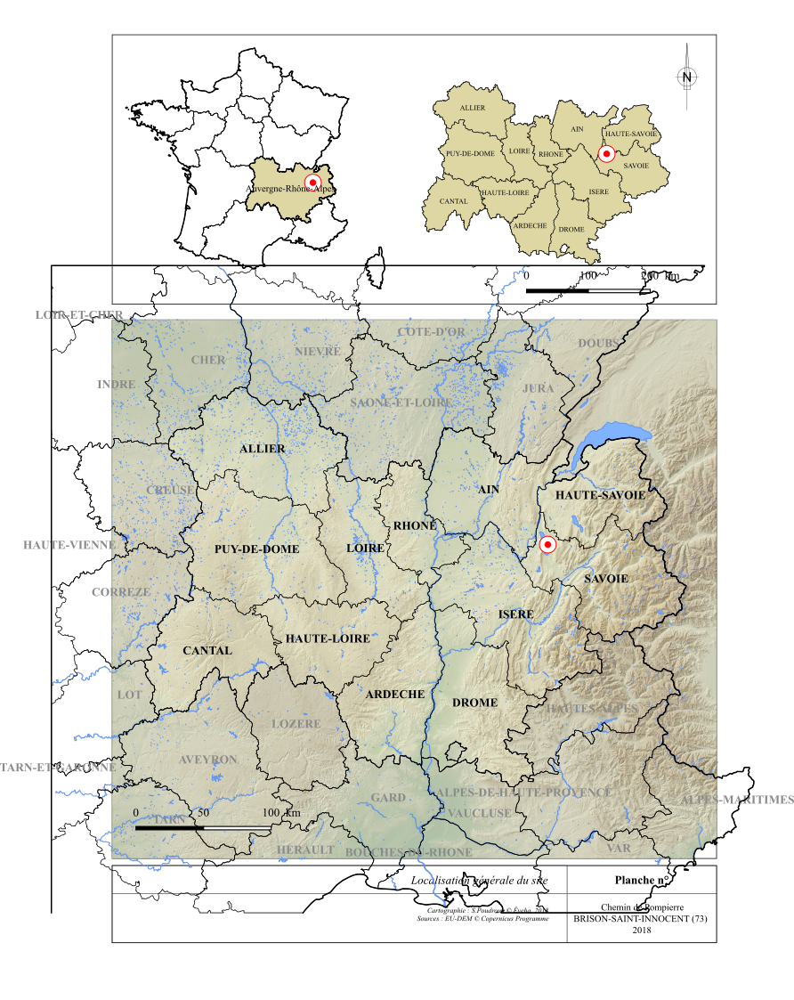
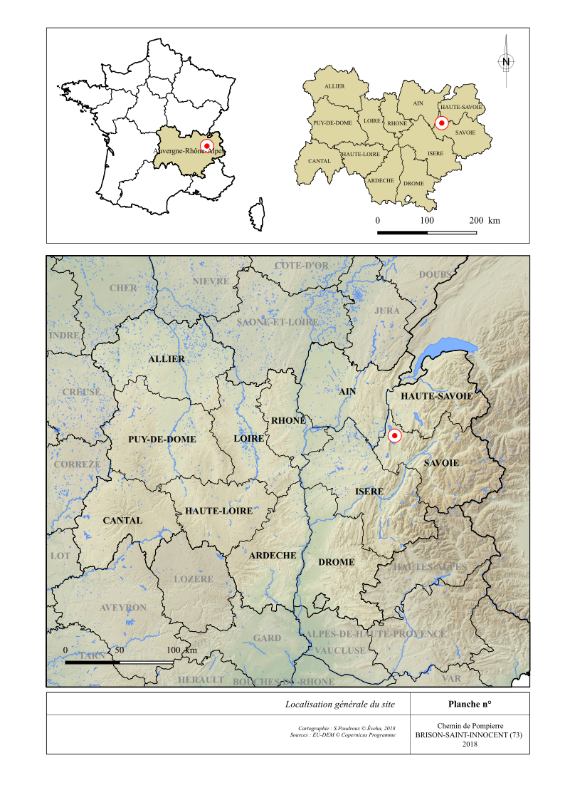

Documentation du plugin Cut2SVG¶
Présentation¶
Il arrive assez fréquemment de renconter un bug à l’export SVG d’un composeur d’impression, provoquant la création d’une carte avec des vecteurs débordants de leur cadre.
Ceci se produit lorsque, dans le composeur, le cadre ou l’échelle de la carte définis par l’utilisateur ne couvrent pas l’intégralité de l’emprise des couches vecteurs sélectionnées.
Exemple de bug lors de l’export SVG de Qgis :
{kind=link}
Ce plugin a été conçu pour pallier ce problème et éviter ainsi un post-traitement dans un logiciel DAO.
Export SVG avec Cut2SVG :
{kind=link}
Pré-requis¶
Les CRS des couches à couper doivent être identiques au CRS du projet.
Si tel n’est pas le cas, le plugin affichera un message d’alerte.
Veillez également à la validité des géométries des couches vecteurs.
En cas d’invalidité, le plugin affichera le nom des couches concernées ainsi que leur nombre d’erreurs.
Fonctionnement¶
- Vérifiez que toutes les couches (vecteur comme raster) figurant dans le composeur soient bien activées dans l’interface principale de Qgis.
- Sélectionnez le composeur d’impression et la carte sur lesquels vous souhaitez travailler. Le plugin affiche les coordonnées de l’emprise de la carte sélectionnée et ouvre le composeur concerné. Un zoom s’effectue dans le canevas sur l’emprise correspondante, délimitée par un rectangle bleu, permettant ainsi de s’y retrouver plus facilement dans le choix de la carte.
{kind=link}
- Spécifiez un dossier d’export, puis lancer le processus.
Les couches vecteurs concernées seront alors dupliquées et coupées par un polygone temporaire correspondant à l’emprise de la carte sélectionnée dans le composeur d’impression.
Dans l’interface, on trouvera ces nouvelles couches dans un nouveau groupe intitulé « Cut2SVG ».
Enfin, les couches vecteurs originales seront désactivées tandis que leurs clones découpés reprendront leurs symbologie.
Le composeur sera actualisé pour une visualisation directe du résultat.
{kind=link}
Il ne restera plus qu’à exporter le composeur en SVG.
Code source¶
Le code source est disponible à l’adresse suivante :